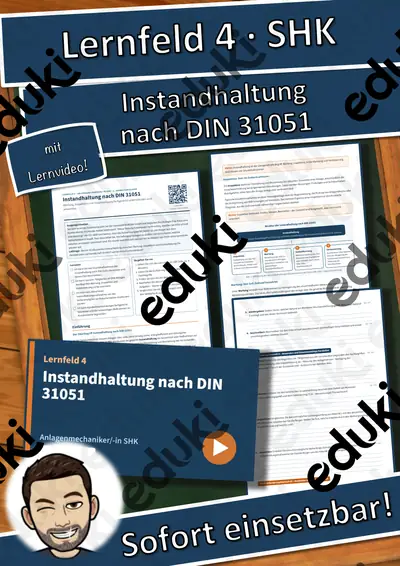
LF 4 Anlagenmechaniker/-in SHK: Instandhaltung nach DIN 31051 – Übungen, Lösungen + Lernvideo

LF 3 Industriemechaniker/-in: Kräfte und Drehmomente bei Schrauben – Übungen, Lösungen + Lernvideo
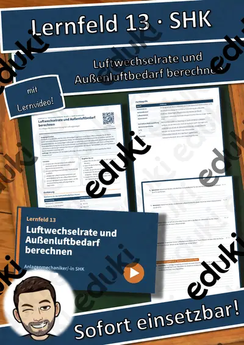
LF 13 Anlagenmechaniker/-in SHK: Luftwechselrate und Außenluftbedarf berechnen – Übungen, Lösungen + Lernvideo
LF 3 Industriemechaniker/-in: Gruppenzeichnung und Stückliste: Basis für die Montage – Übungen, Lösungen + Lernvideo
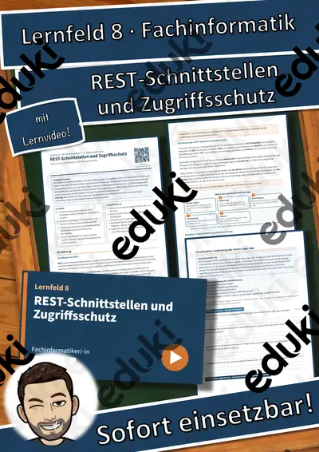
LF 8 Fachinformatiker/-in: REST-Schnittstellen und Zugriffsschutz – Übungen, Lösungen + Lernvideo
LF 6 Fachinformatiker/-in: Service-Level-Agreements (SLA) in der IT-Praxis – Übungen, Lösungen + Lernvideo
LF 8 Industriemechaniker/-in: Werkzeugkorrektur und Nullpunktfestlegung an der CNC – Übungen, Lösungen + Lernvideo
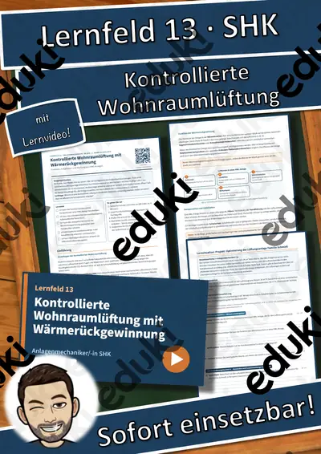
LF 13 Anlagenmechaniker/-in SHK: Kontrollierte Wohnraumlüftung mit Wärmerückgewinnung – Übungen, Lösungen + Lernvideo
LF 5 Fachinformatiker/-in: Testfälle entwickeln und Softwaredokumentation erstellen – Übungen, Lösungen + Lernvideo
LF 1 Industriemechaniker/-in: Anordnungspläne lesen und Arbeitsschritte planen – Übungen, Lösungen + Lernvideo
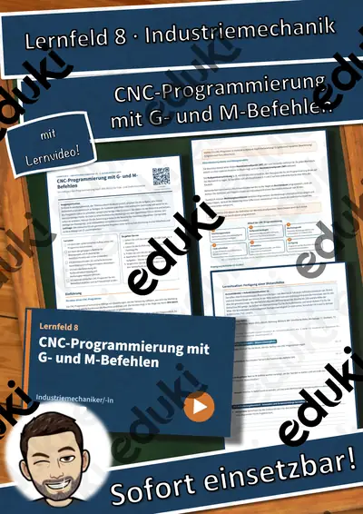
LF 8 Industriemechaniker/-in: CNC-Programmierung mit G- und M-Befehlen – Übungen, Lösungen + Lernvideo
LF 2 Industriemechaniker/-in: Schnittdaten berechnen: vc, n und vf – Übungen, Lösungen + Lernvideo
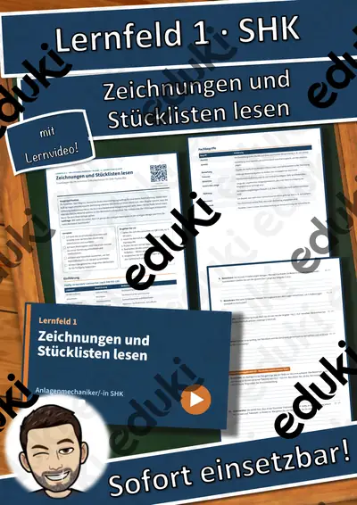
LF 1 Anlagenmechaniker/-in SHK: Zeichnungen und Stücklisten lesen – Übungen, Lösungen + Lernvideo
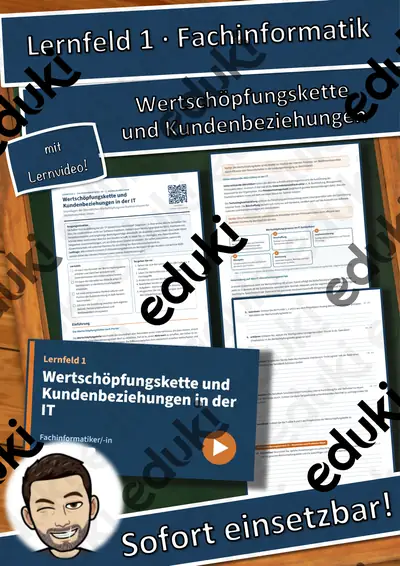
LF 1 Fachinformatiker/-in: Wertschöpfungskette und Kundenbeziehungen in der IT – Übungen, Lösungen + Lernvideo
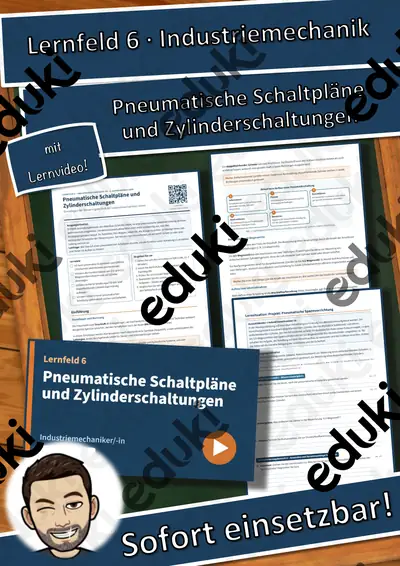
LF 6 Industriemechaniker/-in: Pneumatische Schaltpläne und Zylinderschaltungen – Übungen, Lösungen + Lernvideo
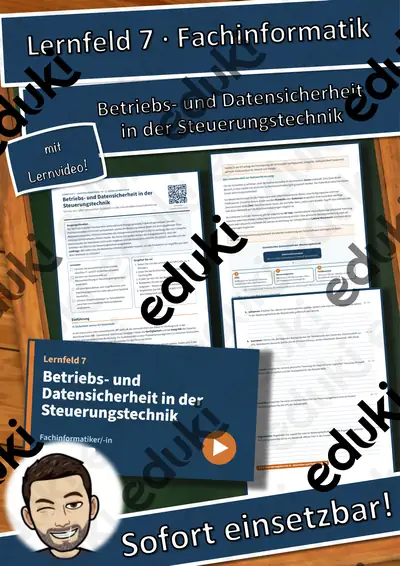
LF 7 Fachinformatiker/-in: Betriebs- und Datensicherheit in der Steuerungstechnik – Übungen, Lösungen + Lernvideo
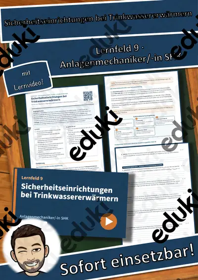
LF 9 Anlagenmechaniker/-in SHK: Sicherheitseinrichtungen bei Trinkwassererwärmern – Übungen, Lösungen + Lernvideo
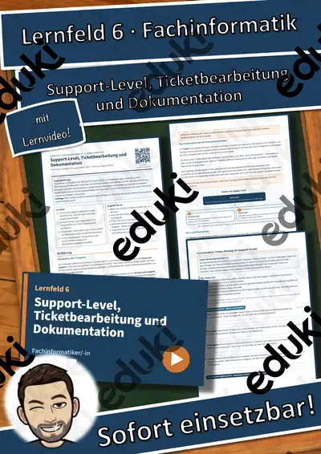
LF 6 Fachinformatiker/-in: Support-Level, Ticketbearbeitung und Dokumentation – Übungen, Lösungen + Lernvideo
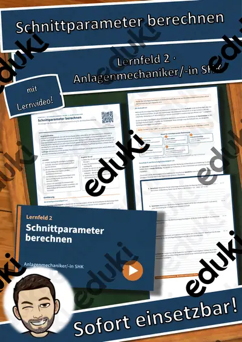
Lernfeld 2 Anlagenmechaniker/-in SHK: Schnittparameter berechnen – Einführung, Übungen, Lösungen + Lernvideo
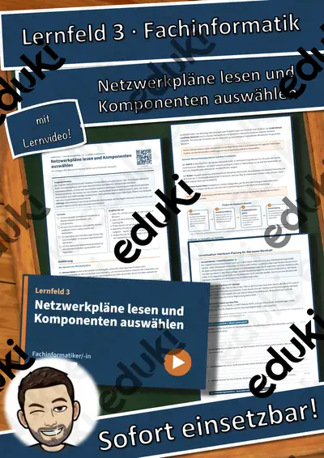
LF 3 Fachinformatiker/-in: Netzwerkpläne lesen und Komponenten auswählen – Übungen, Lösungen + Lernvideo
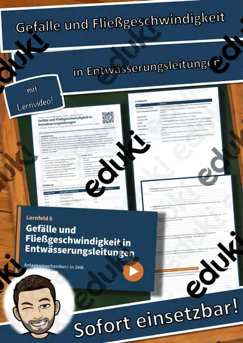
LF 6 Anlagenmechaniker/-in SHK: Gefälle und Fließgeschwindigkeit in Entwässerungsleitungen – Übungen, Lösungen + Lernvid
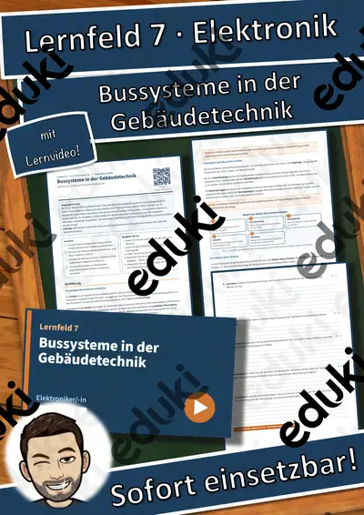
Lernfeld 7 Elektroniker/-in: Bussysteme in der Gebäudetechnik – Einführung, Übungen, Lösungen + Lernvideo
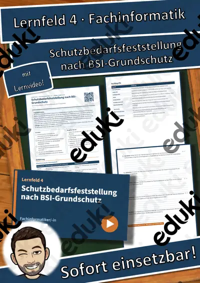
LF 4 Fachinformatiker/-in: Schutzbedarfsfeststellung nach BSI-Grundschutz – Übungen, Lösungen + Lernvideo
LF 14 Anlagenmechaniker/-in SHK: Heizkurve einstellen und Betriebsparameter optimieren – Übungen, Lösungen + Lernvideo

LF 1 Anlagenmechaniker/-in SHK: Biegen: Berechnung der gestreckten Länge – Übungen, Lösungen + Lernvideo
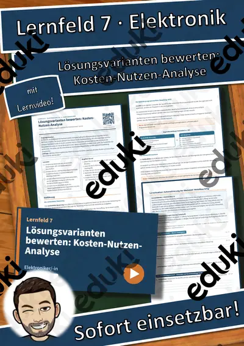
LF 7 Elektroniker/-in: Lösungsvarianten bewerten: Kosten-Nutzen-Analyse – Übungen, Lösungen + Lernvideo
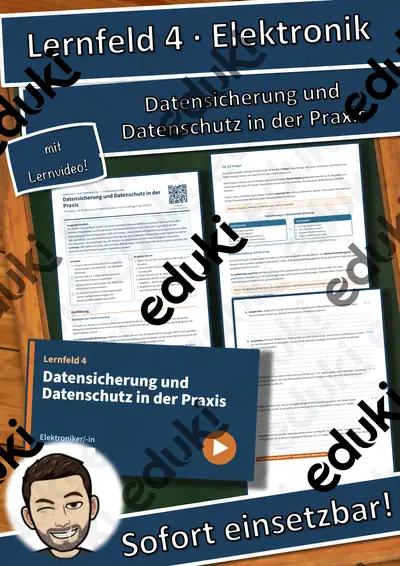
LF 4 Elektroniker/-in: Datensicherung und Datenschutz in der Praxis – Übungen, Lösungen + Lernvideo
LF 9 Fachinformatiker/-in: Funktionsprüfung von Netzwerkdiensten – Übungen, Lösungen + Lernvideo
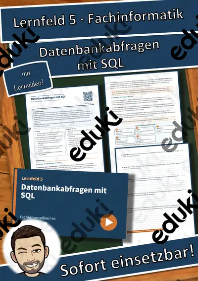
Lernfeld 5 Fachinformatiker/-in: Datenbankabfragen mit SQL – Einführung, Übungen, Lösungen + Lernvideo
LF 6 Elektroniker/-in: Auswahl und sicherer Einsatz von Messmitteln – Übungen, Lösungen + Lernvideo
Keine Materialien gefunden – versuch einen anderen Suchbegriff oder Filter.
Technik nach Lernfeld sortiert
In der beruflichen Bildung ist ein Lernfeld die Einheit, in der geplant wird. Die Materialien dieser Seite folgen dem: Der Titel nennt Lernfeld und Beruf, die Aufgaben stammen aus der Berufspraxis. Es gibt keine Klassenstufen, aber Berufsgruppen.
Industriemechaniker und Zerspanung
Für Industriemechaniker stehen „Anordnungspläne lesen und Arbeitsschritte planen“, „Pneumatische Schaltpläne und Zylinderschaltungen“, „CNC-Programmierung mit G- und M-Befehlen“ und „Schnittdaten berechnen“ bereit. Wer im Technikunterricht der Mittelstufe anfängt, findet „Technisches Zeichnen: Flache Werkstücke“.
Anlagenmechaniker SHK und Elektroniker
Anlagenmechaniker lernen etwa „Zeichnungen und Stücklisten lesen“, „Biegen: Berechnung der gestreckten Länge“, „Gefälle und Fließgeschwindigkeit in Entwässerung“ und „Heizkurve einstellen und Betriebsparameter optimieren“. Für Elektroniker gibt es „Bussysteme in der Gebäudetechnik“ und „Datensicherung und Datenschutz in der Praxis“.
Fachinformatiker
Für Fachinformatiker liegen „Netzwerkpläne lesen und Komponenten auswählen“, „Datenbankabfragen mit SQL“, „Support-Level, Ticketbearbeitung und Dokumentation“ und „Schutzbedarfsfeststellung nach BSI-Grundschutz“ vor.
Einsatz im Unterricht
Die Einheiten enthalten Informationstext, Berechnungen und Lösungen und lassen sich als Lernsituation, Übung oder Vertretungsmaterial einsetzen. Prüfe die Beschreibung, ob Lernfeld und Beruf zu deiner Klasse passen.
Lernsituationen verbinden
Viele Einheiten lassen sich zu Lernsituationen verbinden: Wer in einer Klasse für Industriemechaniker zuerst Zeichnungen liest, danach Schnittdaten berechnet und schließlich die CNC-Programmierung übt, bildet einen durchgehenden Arbeitsprozess ab. Das motiviert, weil die Teilschritte erkennbar zusammengehören.
Vertretung und Förderung
Gerade weil die Einheiten vollständig ausgearbeitet sind, eignen sie sich für Vertretungsstunden in Fachklassen. Leistungsstarke Auszubildende können die Rechenaufgaben weiterführen, schwächere arbeiten mit den Hilfen und Zwischenergebnissen der Lösung nach.
Auch Berufe, die nicht genannt sind, profitieren oft von allgemeinen Einheiten wie Zeichnungen lesen, Schaltpläne verstehen oder Datensicherung, weil diese Kompetenzen in vielen technischen Ausbildungen gebraucht werden.
Häufige Fragen
Wie finde ich Material für meinen Ausbildungsberuf?
Suche nach dem Berufsnamen, etwa „Anlagenmechaniker“, oder nach dem Lernfeld.
Sind Berechnungen mit Lösungsweg enthalten?
Ja, die Lösungen zeigen Ergebnisse und nachvollziehbare Rechenwege.
Gibt es Technik-Material für die Sekundarstufe?
Ja, zum Beispiel zum technischen Zeichnen. Der größte Teil richtet sich aber an die Berufsschule.
Kann ich Einheiten verschiedener Berufe kombinieren?
Ja, bei fachübergreifenden Themen wie Datenschutz oder Pläne lesen funktioniert das gut.